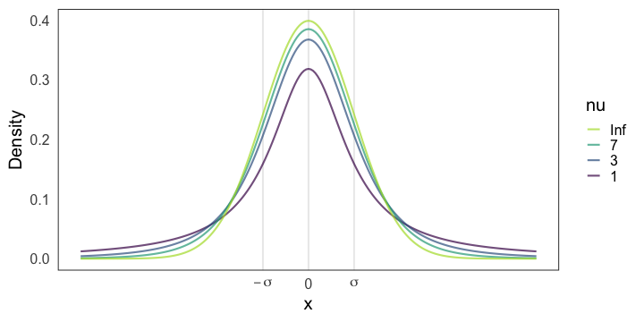
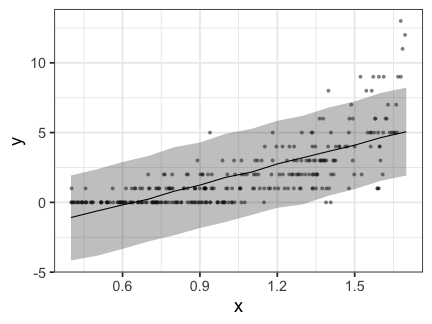
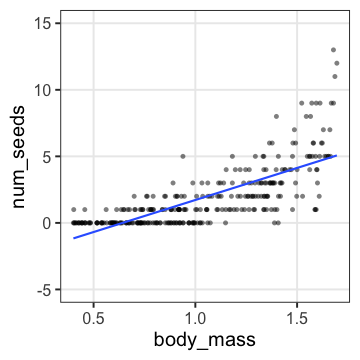
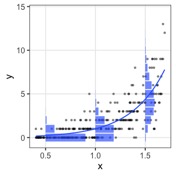
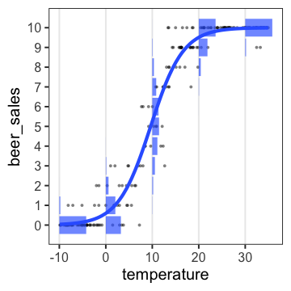
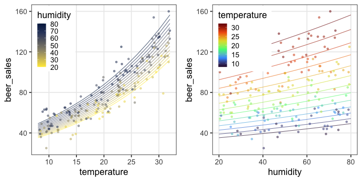
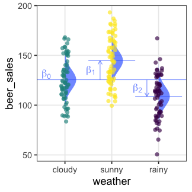
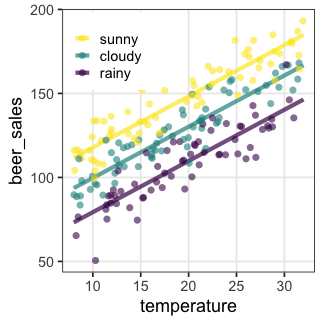
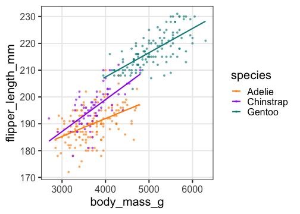

統計モデリング概論 DSHC 2022
(Graduate School of Life Sciences, Tohoku University)
Stan
- Stan言語でモデルを柔軟に記述できる。
- C++で書かれていて高速に動作。
- RやPythonなどから呼び出して使うのが便利。
前回、回帰ではないパラメータ推定をやった。
次に、回帰分析をStanでやってみる。
直線回帰するStanコードの例
slope * x のようなベクトル演算ができる。
data {
int<lower=0> N;
vector<lower=0>[N] x;
vector[N] y;
}
parameters {
real intercept;
real slope;
real<lower=0> sigma;
}
model {
y ~ normal(intercept + slope * x, sigma);
}
変数の型: vector vs array
vector, row_vector, matrix は実数 real のみで、行列演算できる:
real x;
vector[3] v;
row_vector[3] r;
matrix[3, 3] m;
x * v // vector[3]
r * v // real
v * r // matrix[3, 3]
m * v // vector[3]
m * m // matrix[3, 3]
m[1] // row_vector[3]
array に型の制約は無いが、行列演算はできないので自力forループ:
array[3] int a;
array[3] int b;
for (i in 1:3) {
b[i] = 2 * a[i] + 1
}
変数をうまく使って可読性アップ
途中計算に名前をつけることでモデルが読みやすくなる:
model {
vector[N] mu = intercept + slope * x;
y ~ normal(mu, sigma);
}
transformed parameters に書くと
parameters と同様にMCMCサンプルが記録される:
transformed parameters {
vector[N] mu = intercept + slope * x;
}
model {
y ~ normal(mu, sigma);
}
コードの見通しは良くなるが、結果の閲覧はちょっとやりづらくなる。
パラメータの事前分布を明示的に設定できる
が、省略してもStanがデフォルトでうまくやってくれる。
そのせいで収束が悪いかも、となってから考えても遅くない。
parameters {
real intercept;
real slope;
real<lower=0> sigma;
}
model {
y ~ normal(intercept + slope * x, sigma);
intercept ~ normal(0, 100);
slope ~ normal(0, 100);
sigma ~ student_t(3, 0, 10);
}
事前分布の選別
-
とりあえず無情報事前分布 $[-\infty, \infty]$。Stanのデフォルト。
-
収束が悪かったら弱情報事前分布を試す。
事後分布を更新していったとき事前分布っぽさが残らないのが良い。- 取りうる値を逃すような狭すぎる分布はダメ。
- 狭すぎるよりはマシだが、広すぎても良くない。
- 一様分布 $[a, b]$ は一見無情報っぽくて良さそうだが、
事後分布に裾野が残ったり絶壁ができたりしがちなので微妙。
おすすめ: Student’s t分布 or 正規分布
https://github.com/stan-dev/stan/wiki/Prior-Choice-Recommendations
Stanおすすめ弱情報事前分布: Student’s t分布
Student’s $t(\nu=\nu_0, \mu = 0, \sigma = \sigma_0)$
- 自由度 $3 \le \nu_0 \le 7 $ で適当に固定。
- $\nu = 1$ でコーシー分布。裾野が広すぎて良くないらしい。
- $\nu \to \infty$ で正規分布。だいたいこれでいいらしい。
- スケール $\sigma$: 「推定したい値は$[-\sigma_0, \sigma_0]$に収まるだろう」という値。

MCMCサンプルを使ってベイズ確信区間を作図
data {
// ...
int<lower=0> N_tilde
vector[N_tilde] x_tilde;
}
// ...
generated quantities {
array[N_tilde] real y_tilde = normal_rng(intercept + slope * x_tilde, sigma);
}

🔰 Stanで一般化線形モデル
🔰
5-stan-glm.ipynb
を開いて実行していこう。
-
直線回帰
-
ポアソン回帰
-
ロジスティック回帰
-
重回帰
-
分散分析
-
共分散分析






🔰 Stanでpenguinsの回帰分析をしてみよう



🔰 Stanでpenguinsの回帰分析をしてみよう
Stan does not support NA と怒られるので欠損値を取り除いておく:
penguins = sm.datasets.get_rdataset("penguins", "palmerpenguins", True).data
penguins_dropna = penguins.dropna()
参考文献
- データ解析のための統計モデリング入門 久保拓弥 2012
- StanとRでベイズ統計モデリング 松浦健太郎 2016
- RとStanではじめる ベイズ統計モデリングによるデータ分析入門 馬場真哉 2019
- データ分析のための数理モデル入門 江崎貴裕 2020
- 分析者のためのデータ解釈学入門 江崎貴裕 2020
- 統計学を哲学する 大塚淳 2020